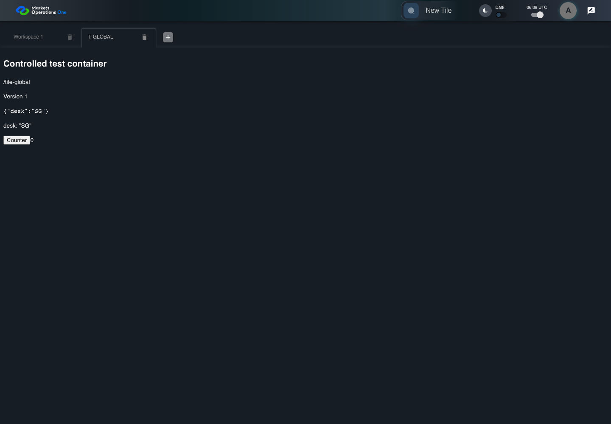

UI-MFE-011 explicitly mounted conditional URL hook
PASS · application/run-050/ui-mfe-011-explicitly-mounted-conditional-url-hook-827c8e6a673b-attempt-1 · ACTUAL_APPLICATION_LOCAL_SERVICES
Actual React shell/provider/dispatcher, error boundary, and Home FDC3 hook. Controlled login, catalog, container and intent delivery. URL cases explicitly mount inspected useParameters source through declared base import adapters. No real OpenFin desktop or protected business tenant acceptance.
2026-10-22T06:08:30.039Z to 2026-10-22T06:08:34.349Z
Assertions and result · Artifact manifest · Exact run inputs and source hashes
Result SHA-256:174af4ddfb52cbdd3ebc0f3dfe7b44a7bd757487bb5710874ff272bd2316b589Machine observations
- conditional-hook-source-and-adapters.json
5dc82becb8a5215c34c57b614eb677df82609050431b3ece085fb50f3b8e4f79
Screenshot capture: CAPTURED. Named frames: 6.
Step screenshot bindings: COMPLETE. 5/5 canonical steps have execution screenshots.
Bindings measure structural coverage only. They do not establish screenshot content quality or relevance.
Screenshot content review: NOT_REVIEWED. Recorded context: 0/6 frames. Identical image bytes: 3 repeated frames. Recorded context does not establish human visual review.
Canonical step timeline
Given User A is authenticated as fixture UI-USER-01 with the case-specific permissions
Execution: PASSED.
1. step-01 Visible state after step 1: Given User A is authenticated as fixture UI-USER-01 with the case-specific permissions
2026-10-22T06:08:31.310Z · 1440×1000
Step: /Users/lushevol/code/github/ratan-release-impact/workbench/tasks/ui-test-coverage-20261022/test-cases.md:7211
SHA-256:fcdb7e886745751817c5a9e551fd47a62899d6497092ca8f80a5c9e3d9e7d6d1And the catalog contains T-GLOBAL and the URL specifies its container, module, tile, and parameters {"desk":"SG"} Mount useParameters in a controlled integration fixture. The inspected production Home component does not call this hook.
Execution: PASSED.
2. step-02 Visible state after step 2: And the catalog contains T-GLOBAL and the URL specifies its container, module, tile, and parameters {"desk":"SG"} Mount useParameters in a controlled integration fixture. The inspected production Home component does not call this hook.
2026-10-22T06:08:31.431Z · 1440×1000
Step: /Users/lushevol/code/github/ratan-release-impact/workbench/tasks/ui-test-coverage-20261022/test-cases.md:7212
SHA-256:fcdb7e886745751817c5a9e551fd47a62899d6497092ca8f80a5c9e3d9e7d6d1Image bytes match frame 1. An unchanged image can be valid for consecutive assertions. This match does not establish correct step content.
When User A loads the declared URL in the conditional useParameters integration fixture
Execution: PASSED.3. step-03 Visible state after step 3: When User A loads the declared URL in the conditional useParameters integration fixture
2026-10-22T06:08:33.157Z · 1440×1000
Step: /Users/lushevol/code/github/ratan-release-impact/workbench/tasks/ui-test-coverage-20261022/test-cases.md:7213
SHA-256:9ab47e35cfe804a08796266a666b224820cbe45a579adb6e2b54034b2d3e8df3Then the controlled container in the selected tile tabpanel displays parameter "desk" with value "SG"
Execution: PASSED.
4. step-04 Visible state after step 4: Then the controlled container in the selected tile tabpanel displays parameter "desk" with value "SG"
2026-10-22T06:08:33.443Z · 1440×1000
Step: /Users/lushevol/code/github/ratan-release-impact/workbench/tasks/ui-test-coverage-20261022/test-cases.md:7214
SHA-256:736f6e508712d68a287ed76b6a6e36394827153c87f008fea29d4aa9cc144f7dAnd the browser URL pathname equals "/"
Execution: PASSED.
5. step-05 Visible state after step 5: And the browser URL pathname equals "/"
2026-10-22T06:08:33.527Z · 1440×1000
Step: /Users/lushevol/code/github/ratan-release-impact/workbench/tasks/ui-test-coverage-20261022/test-cases.md:7215
SHA-256:736f6e508712d68a287ed76b6a6e36394827153c87f008fea29d4aa9cc144f7dImage bytes match frame 4. An unchanged image can be valid for consecutive assertions. This match does not establish correct step content.
Additional named frames

The final visible state after the named test assertions.
2026-10-22T06:08:33.707Z · 1440×1000Step: Test source: /Users/lushevol/code/github/ratan-release-impact/workbench/e2e/audit-specs/conditional-module-launch.spec.ts:33
SHA-256:
736f6e508712d68a287ed76b6a6e36394827153c87f008fea29d4aa9cc144f7dImage bytes match frame 5. An unchanged image can be valid for consecutive assertions. This match does not establish correct step content.
Screenshots establish visible state only. Assertions and traces support functional claims.